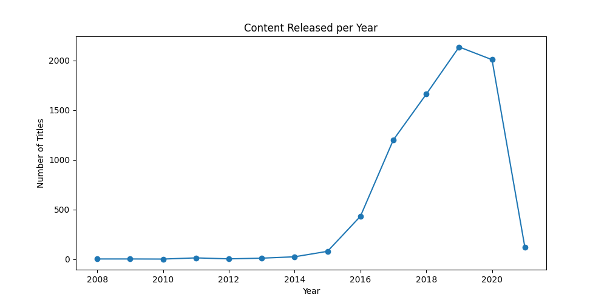
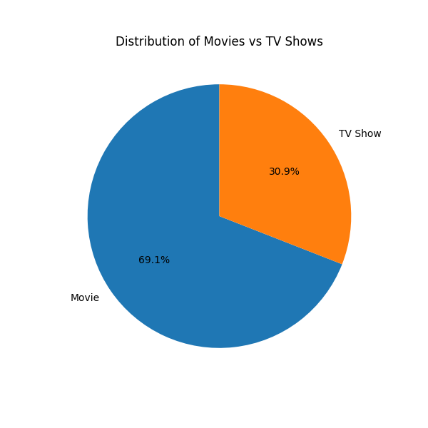
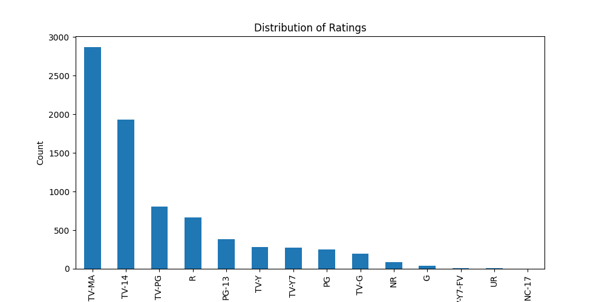
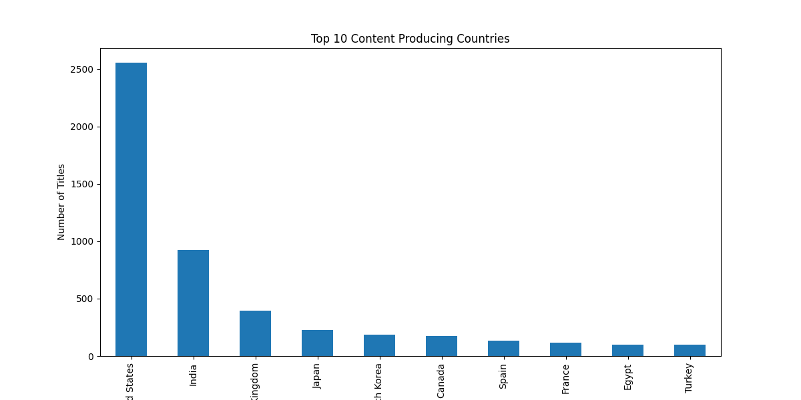
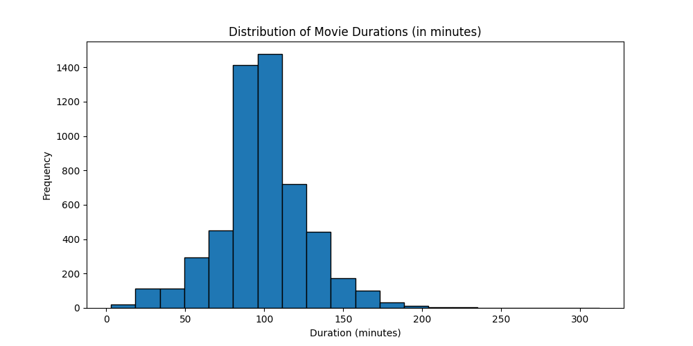
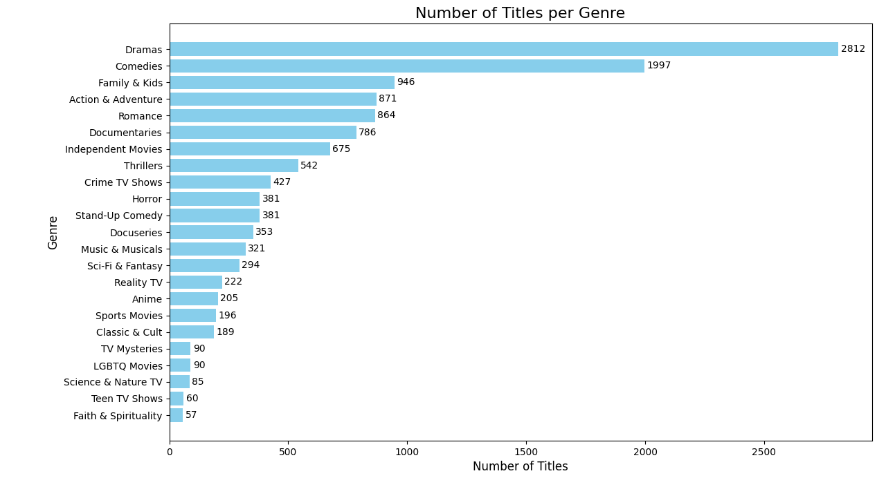

What Does Netflix’s Catalog Actually Have To Offer?
When considering the domain of streaming services, a popular topic is Netflix as it is one of the most popular and most used. It seems that many of these streaming services have an endless supply of shows, though the quality may change. The first thing to consider when analyzing Netflix’s catalog is to consider how it has changed over time. And to understand what Netflix has to offer we analyzed about 8000 titles released on Netflix.
Looking at the graph, we can see that the number of shows that Netflix has added to their platform in the past (2008 - 2021) has had many changes over the years. It seems that Netflix has been consistently in its procurement of shows and movies over the years, with a peak of ~2000 in 2019. This has however seemed to have slowed down. Now, these are just the number of titles that Netflix has added over the years, we should consider further analysis into the types of titles they have added.
Movies or TV shows, Netflix has both, but how many of each does it offer. More accurately, does it offer more tv shows or movies?
For people who enjoy movies over tv shows when it comes to consuming media, it seems that Netflix has a preference towards them as well. Though considering the sheer amount of titles that are on Netflix, 30% in the context of thousands of titles is quite an impressive catalog.
Knowing the specific medium of content that Netflix can provide is helpful, but to better understand what Netflix can offer, one should consider the ratings of the shows and movies. Depending on the audience, especially if it is a younger audience, the rating and appropriateness of a title should be considered:
Netflix does seem to have a notable variety when it comes to the type of content they host. While TV-MA is the most popular, it is followed by TV-14 and TV-PG. Another thing we can consider when looking at the content on Netflix is the country it is coming from. While this may not determine if you will like a show or not, it may give insight into the type of content that Netflix has considering what you may want to watch.
With a strong majority of content coming from the United States and India, we can see that Netflix, while still having a majority of its content coming from these two countries, still has plenty of content from around the world.
Another thing we can consider is the length of the content we are getting. While the data only provides the amount of seasons a TV show may have, which results in an obvious skew towards less seasons, when it comes to movies, it can help us parse information relating to the duration of the movies provided by Netflix.
As you can see, movies can range from 30 minutes to even reaching lengths of about 225 minutes, which is almost 4 hours. Though most movies lie around a 100 minute (1 hour and 40 minutes) runtime.
The last thing to consider when it comes to what Netflix can provide is genre. While there is some overlap as some movies can be both a drama and comedy, the following graph should give an idea of the type of content that Netflix has to offer:
As we see, Netflix has a lot of comedies and dramas. It also has a wide variety of other genres that’ll help sate the user experience for a wider range of audience.
So, when asking the question, “Does Netflix even have anything to watch?”, the answer is a definite “yes”. Netflix has a wide range of both movies and tv shows from all over the world for all ages.